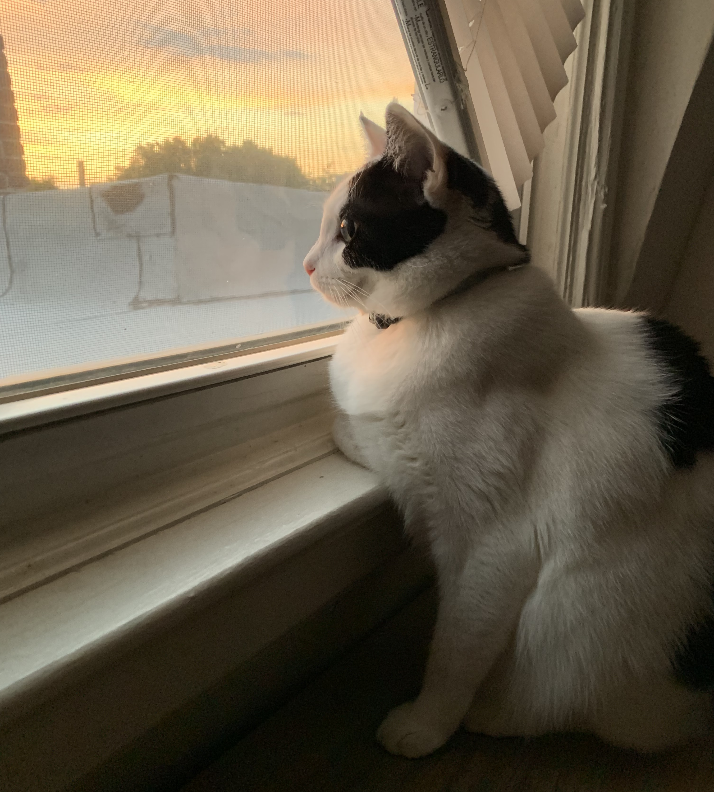

My name is Moo Boy and I have decided to archive my favorite pastime here and share it with you — watching the world pass by my window. I specialize in birding, but there are many other curiosities that pass by my little slice of Washington, DC. Stay tuned!

You never know what you might see if you just take the time to look. But most days, through my window, I see: